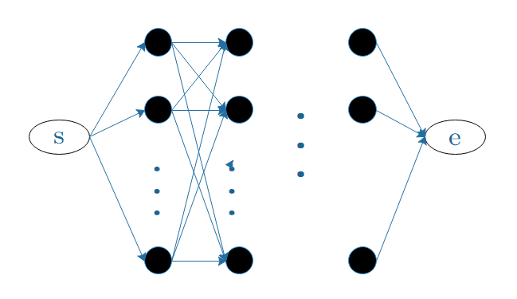

3. hmm
1. 模型概述
(1). 基本参数
- 状态集合 $Q = \lbrace q_1,\ q_2,\ ...\ ,q_N \rbrace$，$N$ 为可能的状态数
- 观测集合 $V = \lbrace v_1,\ v_2,\ ...\ ,v_M \rbrace $，$M$ 为可能的观测数
- 状态序列 $I = (i_1,\ i_2,\ ...\ ,i_T)$，观测序列 $O = (o_1,\ o_2,\ ...\ ,o_T)$
- 状态转移矩阵:
- 观测概率矩阵:
- 初始概率向量: $\pi = [\pi_i] = [P(i_1 = q_i)]$
$\displaystyle A = [a_{ij}]_{N\times N}$
$\displaystyle a_{ij} = P(i_{t+1} = q_j | i_t = q_i),\enspace i=1,...,N;\enspace j=1,...,N$
$\displaystyle a_{ij} = P(i_{t+1} = q_j | i_t = q_i),\enspace i=1,...,N;\enspace j=1,...,N$
$\displaystyle B = [b_j(k)]_{N\times M}$
$\displaystyle b_j(k) = P(o_t = v_k | i_t = q_j),\enspace k=1,...,M;\enspace j=1,...,N$
$\displaystyle b_j(k) = P(o_t = v_k | i_t = q_j),\enspace k=1,...,M;\enspace j=1,...,N$
(2). 基本假设
从
- 齐次马尔科夫性假设: 隐藏的
Markov 链在任意时刻 $t$ 的状态只依赖前一时刻的状态
$P(i_t | i_{t-1}, o_{t-1},...,i_1,o_1) = P(i_t | i_{t-1}),\quad t=1,2,...,T $ - 观测独立性假设: 任意时刻的观测值只依赖于该时刻
Markov 链的状态
$P(o_t | i_T,o_T,...,i_{t+1},o_{t+1},i_t,i_{t-1},o_{t-1},...,i_1,o_1) = P(o_t | i_t)$
(3). 基本问题
- 概率计算: 给定 $\lambda$ 和 $O = ( o_1,...,o_T )$，计算 $P(O ; \lambda)$
- 学习问题: 给定 $O = ( o_1,...,o_T )$，估计 $\lambda$，极大化 $P(O ; \lambda)$
- 预测 / 解码: 给定 $\lambda$ 和 $O = ( o_1,...,o_T )$，求最有可能的状态序列 $I$，使得 $P(I|O)$ 最大
2. 概率计算
给定模型参数 $\lambda$ 和观测序列 $O$，计算 $O$ 出现的概率 $P(O;\lambda)$
(1). 直接计算
由全概率公式展开，直接计算:
$\displaystyle
\begin{aligned}
P(O;\ \lambda)
&= \sum_I P(O|I;\ \lambda) P(I;\ \lambda) \\
&= \sum_{i_1,...,i_T} \pi_{i_1}\cdot b_{i_1}(o_1)\cdot a_{i_1 i_2} \cdot b_{i_2}(o_2) \cdots a_{i_{T-1} i_T} \cdot b_{i_T}(o_T)
\end{aligned}
$
复杂度为 $O(T N^T)$，仅理论上可行
(2). 前向计算
定义: 设截至时刻 $t$ 的观测序列为 $(o_1,...,o_t)$，同时定义前向概率为状态为 $q_i$ 的概率，记作:$\alpha_t(i) = P(o_1,o_2,...,o_t, i_t=q_i;\ \lambda)$计算过程:
- 初值: $\alpha_1(i) = \pi_i b_i(o_1),\quad i=1,2,...,N$
- 递推:
$\displaystyle \begin{aligned} \alpha_t(i) &= \sum_{i_{t-1}} P(o_1,o_2,...,o_{t-1},o_t, i_t=q_i, i_{t-1}) \\ &= \sum_{i_{t-1}} P(o_1,o_2,...,o_{t-1}, i_{t-1}, i_t=q_i) \cdot P(o_t|o_1,o_2,...,o_{t-1}, i_{t-1}, i_t=q_i) \\ &= \sum_{i_{t-1}} P(o_1,o_2,...,o_{t-1}, i_{t-1}) \cdot P(o_t | i_t=q_i) \cdot P(i_t=q_i|i_{t-1}) \\ &= \left[\sum_{j=1}^N \alpha_{t-1}(j) \cdot a_{j-1,i} \right] \cdot b_i(o_t) \end{aligned} $- 终止: $\displaystyle P(O;\ \lambda) = \sum_{i=1}^N \alpha_T(i)$
其高效的原因在于，每一轮对 $t$ 的迭代都用到上一轮的结果，避免了大量的重复计算。时间复杂度为 $O(TN^2)$
3. 学习算法
4. Viterbi 算法
预测问题的目标是 $\max P(I, O)$，它本质上是一个对篱笆形的有向图求最长路径的问题，
Viterbi 算法是用DP 求解此问题的一种方法。
定义: $t$ 时刻以状态 $i$ 结尾的最长路径:$\displaystyle \delta_t(i) = \max_{i_1,...,i_{t-1}} P(i_t = i,i_{t-1},...,i_1,o_t,...,o_1 ;\ \lambda) $定义 $t$ 时刻以状态 $i$ 结尾的最长路径的第 $t-1$ 个结点为 $\psi_t(i)$由定义，可得其递推公式:
$\displaystyle \delta_t(i) = \max_{1\leq j\leq N} [\delta_{t-1}(j) \cdot a_{ji}]\cdot b_i(o_t) $则
Viterbi 算法流程如下:
- 初始: $\delta_1(i) = \pi_i b_i(o_1),\quad \psi_1(i)=s,\qquad i=1,2,...,N$
- 递推: $\displaystyle \delta_t(i) = \max_{1\leq j\leq N} [\delta_{t-1}(j) \cdot a_{ji}]\cdot b_i(o_t)$， $\displaystyle \psi_t(i) = \argmax_{1\leq j\leq N} [\delta_{t-1}(j) \cdot a_{ji}]$
- 终止: $\displaystyle P^ * = \max _ {1\leq i\leq N} \delta _ T(i)$， $\displaystyle i^* _ T = \argmax _ {1\leq i\leq N}\delta _ T(i)$
- 回溯 $i ^ * _ t=\psi _ {t+1} (i ^ * _ {t+1})$，得最优路径 $I ^ * = (i _ 1^*,...,i _ T^*)$